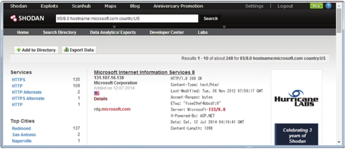

4.7 其他信息收集手段
上面介绍了使用不同的工具以操作步骤的形式进行了信息收集。在Kali中还可以使用一些常规的或非常规方法来收集信息，如使用Recon-NG框架、Netdiscover工具和Shodan工具等。本节将介绍使用这些方法，实现信息收集。
4.7.1 Recon-NG框架
Recon-NG是由Python编写的一个开源的Web侦查（信息收集）框架。Recon-NG框架是一个强大的工具，使用它可以自动的收集信息和网络侦查。下面将介绍使用Recon-NG侦查工具。
启动Recon-NG框架。执行命令如下所示：
以上输出信息显示了Recon-NG框架的基本信息。例如，在Recon-NG框架下，包括56个侦查模块、5个报告模块、2个渗透攻击模块、2个发现模块和1个导入模块。看到[recon-ng][default]>提示符，表示成功登录Recon-NG框架。现在，就可以在[recon-ng][default] >提示符后面执行各种操作命令了。
首次使用Recon-NG框架之前，可以使用help命令查看所有可执行的命令。如下所示：
[recon-ng][default] > help
Commands (type [help|?] <topic>):
---------------------------------
add Adds records to the database
back Exits current prompt level
del Deletes records from the database
exit Exits current prompt level
help Displays this menu
keys Manages framework API keys
load Loads specified module
pdb Starts a Python Debugger session
query Queries the database
record Records commands to a resource file
reload Reloads all modules
resource Executes commands from a resource file
search Searches available modules
set Sets module options
shell Executes shell commands
show Shows various framework items
spool Spools output to a file
unset Unsets module options
use Loads specified module
workspaces Manages workspaces
以上输出信息显示了在Recon-NG框架中可运行的命令。该框架和Metasploit框架类似，同样也支持很多模块。此时，可以使用show modules命令查看所有有效的模块列表。执行命令如下所示：
[recon-ng][default] > show modules
Discovery
---------
discovery/info_disclosure/cache_snoop
discovery/info_disclosure/interesting_files
Exploitation
------------
exploitation/injection/command_injector
exploitation/injection/xpath_bruter
Import
------
import/csv_file
Recon
-----
recon/companies-contacts/facebook
recon/companies-contacts/jigsaw
recon/companies-contacts/jigsaw/point_usage
recon/companies-contacts/jigsaw/purchase_contact
recon/companies-contacts/jigsaw/search_contacts
recon/companies-contacts/linkedin_auth
recon/contacts-contacts/mangle
recon/contacts-contacts/namechk
recon/contacts-contacts/rapportive
recon/contacts-creds/haveibeenpwned
……
recon/hosts-hosts/bing_ip
recon/hosts-hosts/ip_neighbor
recon/hosts-hosts/ipinfodb
recon/hosts-hosts/resolve
recon/hosts-hosts/reverse_resolve
recon/locations-locations/geocode
recon/locations-locations/reverse_geocode
recon/locations-pushpins/flickr
recon/locations-pushpins/picasa
recon/locations-pushpins/shodan
recon/locations-pushpins/twitter
recon/locations-pushpins/youtube
recon/netblocks-hosts/reverse_resolve
recon/netblocks-hosts/shodan_net
recon/netblocks-ports/census_2012
Reporting
---------
reporting/csv
reporting/html
reporting/list
reporting/pushpin
reporting/xml
[recon-ng][default] >
从输出的信息中，可以看到显示了五部分。每部分包括的模块数，在启动Recon-NG框架后可以看到。用户可以使用不同的模块进行各种的信息收集。下面以例子的形式介绍使用Recon-NG中的模块进行信息收集。
【实例4-3】使用recon/domains-hosts/baidu_site模块，枚举baidu网站的子域。具体操作步骤如下所示。
（1）使用recon/domains-hosts/baidu_site模块。执行命令如下所示：
[recon-ng][default] > use recon/domains-hosts/baidu_site
（2）查看该模块下可配置选项参数。执行命令如下所示：

从输出的信息中，可以看到有一个选项需要配置。
（3）配置SOURCE选项参数。执行命令如下所示：
[recon-ng][default][baidu_site] > set SOURCE baidu.com
SOURCE => baidu.com
从输出的信息中，可以看到SOURCE选项参数已经设置为baidu.com。
（4）启动信息收集。执行命令如下所示：
[recon-ng][default][baidu_site] > run
---------
BAIDU.COM
---------
[*] URL: http://www.baidu.com/s?pn=0&wd=site%3Abaidu.com
[*] map.baidu.com
[*] 123.baidu.com
[*] jingyan.baidu.com
[*] top.baidu.com
[*] www.baidu.com
[*] hi.baidu.com
[*] video.baidu.com
[*] pan.baidu.com
[*] zhidao.baidu.com
[*] Sleeping to avoid lockout…
-------
SUMMARY
-------
[*] 9 total (2 new) items found.
从输出的信息中，可以看到找到了9个子域。枚举到的所有数据将被连接到Recon-NG放置的数据库中。这时候，用户可以创建一个报告查看被连接的数据。
【实例4-4】查看获取的数据。具体操作步骤如下所示。
（1）选择reporting/csv模块，执行命令如下所示。
[recon-ng][default] > use reporting/csv
（2）生成报告。执行命令如下所示：
[recon-ng][default][csv] > run
[*] 9 records added to '/root/.recon-ng/workspaces/default/results.csv'.
从输出的信息中可以看到，枚举到的9个记录已被添加到/root/.recon-ng /workspaces/default/results.csv文件中。打开该文件，如图4.4所示。
图4.4 results.csv文件
（3）从该界面可以看到，枚举到的所有子域。
用户也可以使用Dmitry命令，查询关于网站的信息。下面将介绍Dmitry命令的使用。
查看Dmitry命令的帮助信息。执行命令如下所示：
root@kali:~# dmitry -h
Deepmagic Information Gathering Tool
"There be some deep magic going on"
dmitry: invalid option -- 'h'
Usage: dmitry [-winsepfb] [-t 0-9] [-o %host.txt] host
-o Save output to %host.txt or to file specified by -o file
-i Perform a whois lookup on the IP address of a host
-w Perform a whois lookup on the domain name of a host
-n Retrieve Netcraft.com information on a host
-s Perform a search for possible subdomains
-e Perform a search for possible email addresses
-p Perform a TCP port scan on a host
* -f Perform a TCP port scan on a host showing output reporting filtered ports
* -b Read in the banner received from the scanned port
* -t 0-9 Set the TTL in seconds when scanning a TCP port ( Default 2 )
*Requires the -p flagged to be passed
以上信息显示了dmitry命令的语法格式和所有可用参数。下面使用dmitry命令的-s选项，查询合理的子域。执行命令如下所示：
root@kali:~# dmitry -s google.com
Deepmagic Information Gathering Tool
"There be some deep magic going on"
HostIP:173.194.127.71
HostName:google.com
Gathered Subdomain information for google.com
---------------------------------
Searching Google.com:80…
HostName:www.google.com
HostIP:173.194.127.51
Searching Altavista.com:80…
Found 1 possible subdomain(s) for host google.com, Searched 0 pages containing 0 results
All scans completed, exiting
从输出的信息中，可以看到搜索到了一个子域。该子域名为www.google.com，IP地址为173.194.127.51。该命令默认是从google.com网站搜索，如果不能连接google.com网站的话，执行以上命令将会出现Unable to connect: Socket Connect Error错误信息。
4.7.2 ARP侦查工具Netdiscover
Netdiscover是一个主动/被动的ARP侦查工具。该工具在不使用DHCP的无线网络上非常有用。使用Netdiscover工具可以在网络上扫描IP地址，检查在线主机或搜索为它们发送的ARP请求。下面将介绍Netdiscover工具的使用方法。
Netdiscover命令的语法格式如下所示：
netdiscover [-i device] [-r range | -l file | -p] [-s time] [-n node] [-c count] [-f] [-d] [-S] [-P] [-C]
以上语法中，各选项参数含义如下所示。
- -i device：指定网络设备接口。
- -r range：指定扫描网络范围。
- -l file：指定扫描范围列表文件。
- -p：使用被动模式，不发送任何数据。
- -s time：每个ARP请求之间的睡眠时间。
- -n node：使用八字节的形式扫描。
- -c count：发送ARP请求的时间次数。
- -f：使用主动模式。
- -d：忽略配置文件。
- -S：启用每个ARP请求之间抑制的睡眠时间。
- -P：打印结果。
- -L：将捕获信息输出，并继续进行扫描。
【实例4-5】使用Netdiscover工具攻击扫描局域网中所有的主机。执行命令如下所示：
root@kali:~# netdiscover
执行以上命令后，将显示如下所示的信息：

从输出的信息中，可以看到扫描到了三台主机。其IP地址分别为192.168.6.102、192.168.6.1和192.168.6.110。
4.7.3 搜索引擎工具Shodan
Shodan是互联网上最强大的一个搜索引擎工具。该工具不是在网上搜索网址，而是直接搜索服务器。Shodan可以说是一款“黑暗”谷歌，一直不停的在寻找着所有和互联网连接的服务器、摄像头、打印机和路由器等。每个月都会在大约5亿个服务器上日夜不停的搜集信息。下面将介绍Shodan工具的使用。
Shodan的官网网址是www.shodanhq.com。打开该网址界面，如图4.5所示。

图4.5 Shodan官网
如果要搜索一些东西时，在Shodan对应的文本框中输入搜索的内容。然后，单击Search按钮开始搜索。例如，用户想要搜索思科路由器，则在搜索框中输入Cisco，并单击Search按钮。搜索到结果后，显示界面如图4.6所示。

图4.6 搜索结果
从该界面可以看到搜索到全球三百多万的Cisco路由器。在该界面用户可以单击任何IP地址，直接找到该设备。
在使用Shodan搜索引擎中，可以使用过滤器通过缩小搜索范围快速的查询需要的东西。如查找运行在美国IIS 8.0的所有IIS服务，可以使用以下搜索方法，如图4.7所示。

图4.7 搜索的IIS服务
在该界面显示了搜索到的一个IIS 8.0服务器。从搜索到的设备中，可以看到关于该服务器的标题信息、所在的国家、主机名和文本信息。
在Shodan搜索时，需要注意一些过滤器命令的语法。常见的几种情况如下所示。
1. City和Country命令
使用City和Country命令可以缩小搜索的地理位置。如下所示。
- country:US表示从美国进行搜索。
- city:Memphis表示从孟斐斯城市搜索。
City和Country命令也可以结合使用。如下所示。
- country:US city:Memphis。
2. HOSTNAME命令
HOSTNAME命令通过指定主机名来扫描整个域名。
- hostname:google表示搜索google主机。
3. NET命令
使用NET命令扫描单个IP或一个网络范围。如下所示。
- net:192.168.1.10：扫描主机192.168.1.10。
- net:192.168.1.0/24：扫描192.168.1.0/24网络内所有主机。
4. Title命令
使用Title命令可以搜索项目。如下所示。
- title:“Server Room”表示搜索服务器机房信息。
5. 关键字搜索
Shodan使用一个关键字搜索是最受欢迎的方式。如果知道目标系统使用的服务器类型或嵌入式服务器名，来搜索一个Web页面是很容易的。如下所示。
- apache/2.2.8 200 ok：表示搜索所有Apache服务正在运行的2.2.8版本，并且仅搜索打开的站点。
- apache/2.2.8 -401 -302：表示跳过显示401的非法页或302删除页。
6．组合搜索
- IIS/7.0 hostname:YourCompany.com city:Boston表示搜索在波士顿所有正在运行IIS/7.0的Microsoft服务器。
- IIS/5.0 hostname:YourCompany.com country:FR表示搜索在法国所有运行IIS/5.0的系统。
- Title:camera hostname:YourCompany.com表示在某台主机中标题为camera的信息。
- geo:33.5,36.3 os:Linux表示使用坐标轴（经度33.5，纬度36.3）的形式搜索Linux操作系统。
7．其他搜索术语
- Port：通过端口号搜索。
- OS：通过操作系统搜索。
- After或Before：使用时间搜索服务。
【实例4-6】使用Metasploit实现Shodan搜索。具体操作步骤如下所示。
（1）在Shodanhq.com网站注册一个免费的账户。
（2）从http://www.shodanhq.com/api_doc网站获取API key，获取界面如图4.8所示。获取API key，为了在后面使用。

图4.8 获取的API key
（3）启动PostgreSQL服务。执行命令如下所示：
root@kali:~# service postgresql start
（4）启动Metasploit服务。执行命令如下所示：
root@kali:~# service metasploit start
（5）启动MSF终端，执行命令如下所示：
root@kali:~# msfconsole
msf >
（6）选择auxiliary/gather/shodan_search模块，并查看该模块下可配置的选项参数。执行命令如下所示：

从以上输出信息中，可以看到有四个必须配置选项参数。其中有两个选项已经配置，QUERY和SHODAN_APIKEY还没有配置。
（7）配置QUERY和SHODAN_APIKEY选项参数。执行命令如下所示：
msf auxiliary(shodan_search) > set SHODAN_APIKEY duV9vwgCmo0oDfWqfWafax8sj0ZUa5BU
SHODAN_APIKEY => duV9vwgCmo0oDfWqfWafax8sj0ZUa5BU
msf auxiliary(shodan_search) > set QUERY iomega
QUERY => iomega
从输出的信息中，可以看到QUERY和SHODAN_APIKEY选项成功配置。
（8）启动搜索引擎。执行命令如下所示：

以上输出的信息显示了匹配iomega关键字的所有信息。搜索的结果显示了四列，分别表示IP地址、城市、国家和主机名。如果想要使用过滤关键字或得到更多的响应页，用户必须要购买一个收费的APIkey。